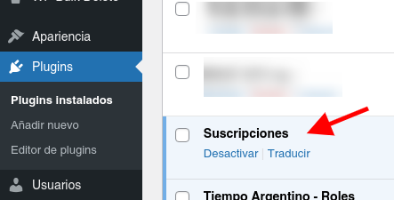

Instalación
Para instalar el plugin, primero debe clonarlo o descargarlo de este repositorio:
Clonar:
$ git clone https://github.com/TiempoArgentino/ta-suscriptions.git
Descargar: en la pestaña code boton code (verde) del repositorio, descargar desde
Download ZIP como se muestra en la imagen:

Una vez clonado o descargado, se debe mover la carpeta subscriptions al
directorio
wp-content/plugins
de su instalación de Wordpress.
IMPORTANTE
Tenga en cuenta que la carpeta subscriptions-main debe ser renombrada a
subscriptions o puede haber problemas con la instalación.
Una vez que se descomprime y renombra la carpeta, nos dirigimos a la lista de plugins,
buscamos Subscriptions o Suscripciones(según su
idioma) y lo activamos.

Más información sobre manejo de plugins (en Inglés):
Wordpress Codex Plugins
Se debe extender las funciones con el plugin User Panel, especialmente creado para
acompañar a Suscriciones.
El plugin se puede descargar o clonar de este repositorio:
GitHub
Al igual que con Suscripciones, una vez clonado o descomprimido, se debe renombrar la carpeta a user-panel y pasarla a wp-content/plugins, luego activar el plugin desde la lista de plugins de la instalación de Wordpress.
Configuración
Con el plugin ya instalado y activo, nos dirigimos al nuevo menú creado
Subscriptions o Suscripciones según su idioma:

En esta parte nos encontramos con los siguientes submenus:
Suscripciones (presentación)
Breve resumen de la función principal del plugin y enlaces a documentación.
Suscripciones
En esta parte podemos crear, editar y borrar las suscripciones propiamente dichas
Ver:
Crear
Membresías
En esta pantalla encontramos todas las membresías activas, sus renovaciones y cancelaciones.
Ver:
Manejo de membresías
Emails y Estados
En esta pantalla encontramos los estados y emails que se envian al cliente, podemos configurar los textos por ejemplo, o crear nuevos estados para el uso en membresías de ser necesario.
Ver:
Configuración de Emails y Estados
Opciones de pago
Pantalla de configuración de medios de pago.
Ver:
Configuración de Medios Pago
Opciones
Configuración general de todo el plugin y sus opciones.
Configuración básica del pluginCrear Suscripciones
Primero, debemos recordar que Suscripciones o Subscriptions es un POST TYPE que
funciona muy parecido a una entrada básica de Wordpress, más información:
https://developer.wordpress.org/themes/basics/post-types/
Para crear suscripciones no dirigimos al menú Suscripciones en nuestro
administrador, Nueva Suscripción (recuerde que esto puede estar en inglés, según la
configuración de su instalación).

Al hacer click en el botón vemos lo siguiente:

En el campo “Título” (Añadir título), agregamos el nombre de la nueva
suscripción.
Luego podemos agregar una descripción del mismo.
Nos movemos a la barra de opciones del lado derecho, donde tenemos 2 opciones
Suscripción y Bloque.
Las opciones a configurar para la creación de la suscripción se encuentran en la
pestaña Suscripción.
Las opciones básicas como Estado y Visibilidad e Imagen Principal
son propias de Wordpress, por lo que aquí veremos solo lo que pertenece a
Suscripciones.
Opciones y Detalles
Opciones y detalles es lo básico para la creación de una suscripción.
Precios: Podemos agregar uno (1) principal y varios alternativos, siempre en número y puede conetener decimales de ser necesario. También podemos activar la opción de recibir un monto definido por el usuario. Este monto se valida para que no sea menor al minimo de la suscripción.
Periodo: Aquí definimos el periodo de suscripción puede ser en días o meses. Por ejemplo, para 1 (un) mes, se puede usar 30 días o 1 mes. Si bien esto se puede configurar según la necesidad del proyecto, siempre hay que tener en cuenta que depende de los tiempos de suscripción o membresía que acepten los medios de pago configurados.
Direcciones: Por último, la opción de ¿Tiene un producto físico con envío? nos permite activar un formulario para solicitar una dirección al nuevo miembro, por si es necesario enviarle un producto físico.
Ver configuración de Pagos
Membresías
En el menú Suscripciones -> Membresías (nuevamente, según su idioma) encontramos todos
los pedidos / suscripciones / ordenes creadas por los suscriptores.

La lista de Membresías se ve de la siguiente manera:

En esta lista encontramos los siguientes items:
Referencia: Un código alfanumérico que sirve de referencia del
pago.
Usuario: Nombre del miembro / suscriptor.
Email: Email de miembre / suscriptor.
Estoda: Estado de la membresía, estos pueden ser (por defecto),
Completado, Cancelado, En espera, Renovación, Error.
Método de pago: Método con el cual pago el miembre.
Suscripción: Nombre de la suscripción que eligió el miembro.
Tipo: Puede ser Suscripción o Donación (todavía en desarrollo).
Fecha de renovación: Fecha de la próxima renovación de la membresía.
Ingresando a la membresía (haciendo click sobre la referencia), encontramos la siguiente
pantalla:

En esta pantalla encontramos primero los Datos de la membresía. En esta
sección vamos a encontrar al información básica de la membresía creada.

Debajo de esto encontramos los Datos del pago. Esta sección cambia
según el medio de pago elegido, en este caso vemos una membresía creada con Débito
Bancario. Estos datos cambian y se amplían según el medio de pago.

En el menú de la derecha encontramos estas dos opciones para el manejo de
membresías:
Reenviar email: Esta opción nos permite re enviar el email de
bienvenida al usuario en el caso de ser necesario, o reenviar el email con los datos de
la membresía.
Cambiar estado: Como su nombre lo indica, con esta opción podemos
pasar de un estado a otro la membresía, por ejemplo, en el caso de los pagos por Débito
Bancario, de los cuales, el estado es "En Espera", se pueden validar pasandolos a
"Completado". La opción permite que se le envíe un email con el estado nuevo al
suscriptor.
Emails y estados
En el menu de Email y estados se encuentra la configuración para
los emails transaccionales que el sistema envía a los usuarios al suscribirse o dar
de baja una suscripción, así como los estados de las membresias.

Los estados por defecto son:
- Completed / Completado
Para todas las suscripciones en las cuales el proceso termino con exito. -
On Hold / Espera
Para las suscripciones realizadas con medios de pago Offline, como Débito Bancario. -
Error
Para las suscripciones en las que hubo un error con el pago. -
Cancel / Canceleda
Para las suscripciones que son canceladas por el miembro.
Todos estos estados tienen un email asignado (menos Renovación). Haciendo click
sobre cada uno, podemos modificar el email enviado al miembro en cada caso:

Para la edición:
Nombre estado: Es el nombre que veremos en la lista de
membresías.
Color: El color con que veremos el estado en las lista de
membresías.
Asunto: El asunto con que el email le llegará al suscriptor /
miembro.
Cuerpo del email: El texto por defecto del email que le llegará al
suscriptor / miembro.
En esta parte podemos usar "tags" para personalizar el Asunto y Cuerpo, las "tags"
son las siguientes:
- Para en nombre {{first_name}}
- Para el apellido {{last_name}}
- Para el email {{email}}
- Nombre de la suscripción {{subscription_name}}
Adicional, podemos crear nuestros estados personalizados de ser necesario.
Este nuevo estado se puede utilizar en las membresías.
Medios de Pago
La configuración de Medios de Pago se encuentra en Suscripciones > Opciones
de pago, allí encontramos la configuración para los dos medios de pago
por defecto del plugin, en esta zona también de deberían encontrar los medios de
pago personalizados en caso que haya
.
Mercadopago
Los datos necesarios para la configuración de Mercadopago son: Public Key, Access Token y Collector ID, estos datos se puede conseguir la pantalla de credenciales de Mercadopago Ver credencialesLa pantalla de credenciales se ve como esta:

El Collector ID es la última parte del token de nuestras credenciales:

Para crear una suscripción en su cuenta de Mercadopago, debe dirigirse a e ingresar a la cuenta. Dentro del menú de la izquierda debe ir a Suscripciones -> Crear nueva suscripción:
Una vez creada la suscripción, en la url tendremos un parámetro llamado ID, parecido a esto se verá:
https://www.mercadopago.com.ar/subscription-plans/share?id=2c93808479cfe0100179d7a8c6f907ce
Copiamos la cadena que esta despues de id= y la pegamos en el siguiente campo:
Con esto configuramos el plan al cual las suscripciones se agregaran para tener todo ordenado y tener las funciones de cambio de precio activas. Es decir, cuando cambiemos el plan, se cambia el precio para todos nuestros suscriptores que pertenezcan a ese plan en particular.
IMPORTANTE
Las suscripciones en Mercadopago deben ser creadas con la opción Prefiero
que el cliente lo defina en el precio.

Una vez configurado todo esto, tenemos que configurar las notificaciones IPN de
Mercadopago, ver la documentación aquí.
Debe ingresar a https://www.mercadopago.com.ar/developers/panel/notifications/ipn
e ingresar la siguiente configuración.
En URL del sitio en producción debe poner la URL de su sitio
apuntando a /notification, de esta manera: https://{urldelsitio}/notifications/,
recuerde que sin SSL (https) Mercadopago NO funciona.
En la parte de Eventos seleccionar Pagos
(Payments).
La configuración debe quedar de la siguiente manera:

Débito Bancario
El débito bancario no tiene configuración en si mismo ya que el suscriptor agrega sus datos para que de forma manual se pueda agregar al débito bancario mensual. Este tipo de medio de pago es offline, por lo cual, si el suscriptor lo selecciona, para darle el alta final hay que hay hacerlo de manera manual, entrando a la membresía creada.
Opciones (configuración global)
En las opciones generales tenemos varios items, los primeros son una opción para
cargar (o no), Bootstrap para usar en el front:
Esta opción esta disponible de esta forma por si ya nuestro front tienen Bootstrap.
De esta forma, no se sobre escriben las clases o js.
Como segunda opción, tenemos el Contenido Privado. Esta opción nos
permite activar usar (o no) el contenido, privado, adicional, podemos elegir a que
tipo de post (Post type), se lo asignaremos, así como asignar un mensaje para
mostrar cuando el contenido es privado.
La siguiente opción nos permite elegir el rol por defecto para los sucriptores, por
defecto es Suscriptor.
La siguiente opción es para la configuración de moneda, aquí
podemos elegir el simbolo de la moneda y el prefijo a mostrar en la lista de
membresía, este prefijo es usado cuando se genera la referncia de la orden /
membresía.
La opción de Páginas es una de las más importantes. Al momento de
activar el plugin, este genera una serie de páginas necesarias para el
funcionamiento correcto.
- Página principal
La página donde se mostraran las suscripciones. - Página de gracias
Esta página esta al finalizar el pago - Ingresar
Página de login - Página de registroFormulario de registro
- PerfilPágina donde se mostrará la información del usuario
- Página de PagoPágina donde se muestran los medios de pago activos
- Términos y condicionesTérminos y condiciones del servicio
- DonacionesMejora en proceso

La Opción de Emails se refiere a la configuración del lado del
administrador, es decir, el remitente por un lado y por otro los emails que recibirá
el administrador al momento de nuevo registro de usuario y email de bienvenida al
sitio.
Esto es editable por supuesto, y se pueden usar las siguiente "tags":
- Para en nombre {{first_name}}
- Para el apellido {{last_name}}
- Para el email {{email}}
- Nombre de la suscripción {{subscription_name}}
- Nombre del sitio {{site_name}}
Diseño y plantillas
El plugin cuenta con un front ya creado que se encuentra en la carpeta:
public/partials
en la carpeta "public" también encontramos las carpetas "js" y "css", recomendamos no sobre escribir "js".
Dentro de partials encontramos dos carpetas auth y pages, copiando estas dos carpetas a su theme activo puede sobre escribir las funciones y diseño del plugin. Se realiza de la siguiente manera:
En el theme activo (wp-content/themes/your-theme) debe crear una carpeta llamada subscriptions-theme y dentro pegar las carpetas auth y pages. De esta forma, puede modificar los templates o plantillas del plugin. Recomendamos consevar nombres de campos o botones de formulario que cuenten con ellos, así como los ID de los mismos. En caso de modificar los mismos, deberá sobreescribir las funciones de js dentro de su theme.
Estructura de carpetas
- /root
- wp-content
- themes
- main-theme / child-theme
- subscriptions-theme
- pages
- auth
- subscriptions-theme
- main-theme / child-theme
- themes
- wp-content
Plugin options
Aclaración
El uso de esta opciones se pude hacer en otro plugin o en su theme directamente. Todas
las opciones se llaman con:
get_option('nombre_opcion')Más información en el Codex Wordpress.
Opciones re-utilizables
| default_sucription_role | Obtener rol por defecto de los suscriptores |
|---|---|
| subscriptions_currency_symbol | Obtener simbolo de moneda |
| member_sku_prefix | Obtener prefijo de referencia de membresías |
| subscriptions_loop_page | Obtener ID de página de suscripcionse |
| subscriptions_thankyou | Obtener ID de página de gracias |
| subscriptions_login_register_page | Obtener ID de página de login |
| subscriptions_register_page | Obtener ID de página de registro |
| subscriptions_profile | Obtener ID de página de perfil |
| subscriptions_payment_page | Obtener ID de página de pago |
| subscriptions_terms_page | Obtener ID de página de Términos y Condiciones |
| subscriptions_email_sender | Email de remitente (administrador por defecto) |
Plugin actions
Lista de acciones que se puede usar para extender el plugin. Se llaman:
add_action('action_hook','callback_function',priority, arguments)Más información en Codex Wordpress
Actions
| before_subscriptions_loop | Antes del comienzo de la página de suscripciones |
|---|---|
| subscriptions_loop_footer | Footer de página de suscripciones |
| subscriptions_payment_page_header | Header página de pago |
| subscriptions_payment_page_message_before | Comienzo página de pago |
| subscriptions_payment_page_before_methods | Antes de mostrar los medios de pagos |
| payment_messages | Mostrar mensajes de los medios de pago |
| payment_getways | Gancho para mostrar los medios de pago |
| subscriptions_payment_page_after_methods | Después de los medios de pago |
| subscriptions_payment_page_message_after | Mensaje luego de los medios de pago |
| subscriptions_payment_page_footer | Pie de página de pagos |
| header_thankyou_page | Header página de gracias |
| messages_thankyou | Mensaje antes de mensaje de gracias. |
| body_thankyou_page | Mensaje extra en el body de página de pago |
| subscriptions_password_lost_before | Antes de formulario de recuperación de password |
| subscriptions_password_lost_errors | Mostrar errores extra en recuperación de password |
| subscriptions_password_lost_after | Pie de formulario de recueperar password |
| user_register_actions | Header de página de registro |
| subscriptions_before_register_form | Antes del formulario de registro |
| subscriptions_after_register_form | Después del formulario de registro |
| user_login_actions | Header página de login |
| subscriptions_before_login_form | Antes del formulario de login |
| subscriptions_after_login_form | Después del formulario de login |